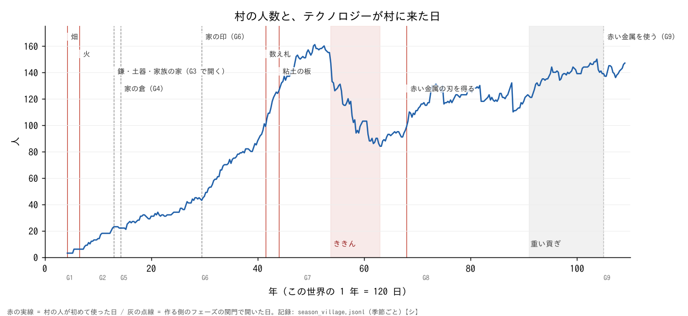
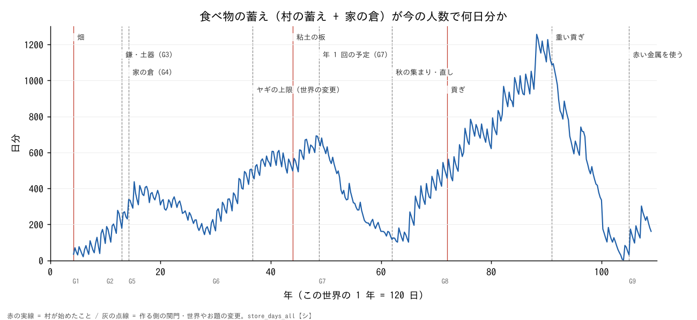
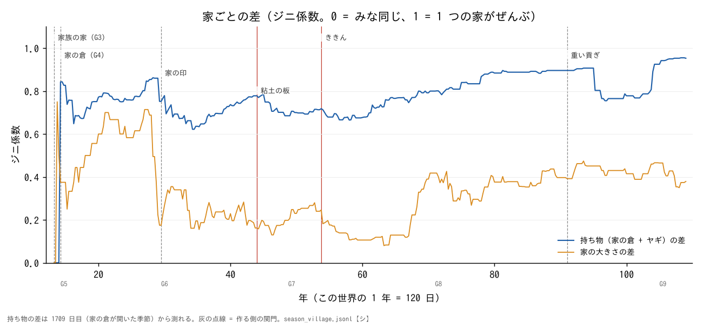
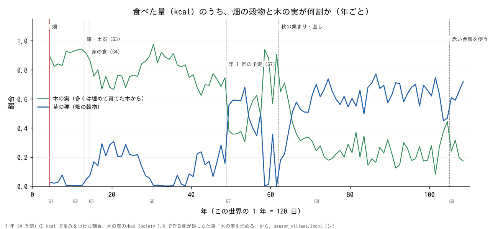
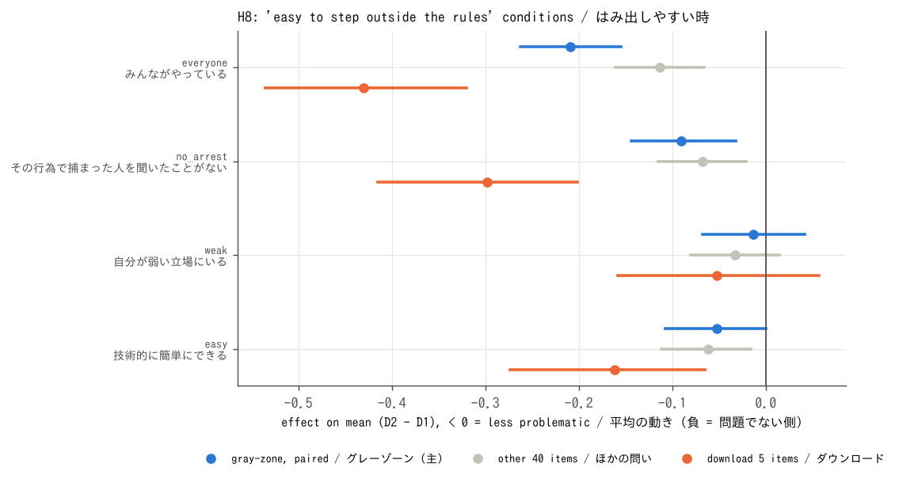
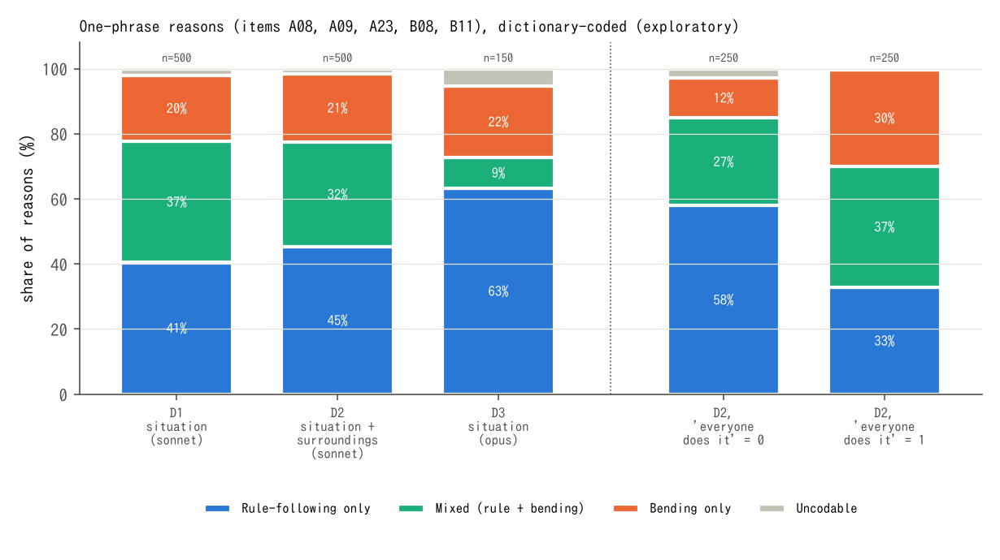

人間らしさをシミュレートしたい。そのために、川辺の村 (LLM の村〔Claude (村人と答え手)〕) が人類史と何が同じで何が違うのかを調べている。
出どころ: docs/research/humanity/README.md・sim/society/app/tech_tree.html
外から持ってきた研究には〔 〕の印をつけた。くわしくは下の出典の欄。 出典の欄へ
出どころ: sim/society/app/tech_tree.html・sim/society/data/records/season_village.jsonl・sim/society/HANDOFF.md
出どころ: sim/society/data/records/season_village.jsonl・paper/paper1/要約_ja.md
出どころ: docs/research/state_emergence_*.md・docs/research/humanity/paper2_exp*_results.md
出どころ: docs/research/humanity/paper2_exp*_results.md
出どころ: paper/paper1/README.md・paper/paper2/README.md
出どころ: 下の「使ったトークン」の表
出どころ: paper/paper1/README.md の「TODO for the author」
出どころ: paper/paper2/README.md の「TODO for the author」
出どころ: sim/society/HANDOFF.md
出どころ: sim/society/app/tech_tree.html (フェーズの日)・各行の文書
出どころ: docs/research/humanity/README.md・docs/research/humanity/part1_same_and_different.md・docs/research/humanity/part2_technology.md
出どころ: docs/research/humanity/README.md・docs/research/humanity/part2_technology.md
出どころ: docs/research/humanity/README.md・docs/research/humanity/paper2_exp2_results.md・docs/research/humanity/paper2_exp3_results.md・docs/research/humanity/part3_humanness.md
出どころ: docs/research/humanity/part1_same_and_different.md・part2_technology.md・part3_humanness.md (くわしく)
しるし: 支持 一部 支持しない 逆 (色だけでなく、形と言葉で分けた)
| 仮説 | 見たこと | 結果 | 判定 |
|---|---|---|---|
| H1a | 人格なしだと答えがそろいすぎる | SD の平均 sonnet 0.18・haiku 0.37・opus 0.14 | 支持 |
| H1b | 主成分の形が人と違う | 第 1 主成分 39% (人間 27%〔田之畑 2017 (修士論文)〕) | 支持 |
| H2 | 人格なしの答えは、修士論文の「常識的な回答」〔田之畑 2017 (修士論文)〕に近い | 差の平均 1.0〜1.2。近くない | 支持しない |
| H3 | 人格を持たせると、ばらつきが増える | SD の平均 0.18 → 0.41 | 支持 |
| H4 | 本音を先に書くと「問題でない」へ動く | 逆。グレーゾーンで +0.25、より「問題がある」へ | 逆 |
| H5 | 修士論文の人間の 5 つの意識〔田之畑 2017 (修士論文)〕が LLM でも出る | 出たのは「権利意識」の 1 つだけ | 支持しない |
出どころ: docs/research/humanity/paper2_exp1_results.md
| 仮説 | 見たこと | 結果 | 判定 |
|---|---|---|---|
| H6 | 第 1 主成分の割合が実験 1 (0.392) より下がる | D1 0.228 [0.195, 0.312]。人間の 0.268〔田之畑 2017 (修士論文)〕が CI の中 | 支持 |
| H7 | 修士論文の人間の 5 つの意識〔田之畑 2017 (修士論文)〕のうち 2 つ以上が出る | 出たのは 1 つ (実験 1 と同じ) | 支持しない |
| H8 | 修士論文のはみ出しやすい時 4 つ〔田之畑 2017 (修士論文)〕が、グレーゾーンをゆるくする | 「みんながやっている」−0.21・「捕まった人を聞いたことがない」−0.09 は効いた。ほかの 2 つは効かない | 一部 |
| H9 | 学生・暮らしが苦しい人は、ダウンロードにゆるい | 弱い側 3.44、働いてゆとり側 3.81 | 支持 |
| H10 | 1 本の「厳しさ」の軸にまとまらない | 厳しさの割合 0.223 (実験 1 は 0.391) | 支持 |
| H11 | 暮らしを持たせると opus もばらける | SD の平均 0.137 → 0.324 | 支持 |
出どころ: docs/research/humanity/paper2_exp2_results.md
| 仮説 | 見たこと | 結果 | 判定 |
|---|---|---|---|
| H12 | E1 の主成分 1〜2 に、人間の所有意識〔田之畑 2017 (修士論文)〕が出る | 重なり 2、偶然の p 0.084 | 支持しない |
| H13 | E1 の第 1 主成分が、人間の権利意識から離れる | 重なり 3 (B09・A09・A08)。軸は動かなかった | 支持しない |
| H14 | 借りた物の「みんながやっている」で、借りた物の問いがゆるくなる | −0.72 [−0.85, −0.58] | 支持 |
| H14 | 借りた物の「とがめられた人を聞かない」で、借りた物の問いがゆるくなる | −0.42 [−0.54, −0.29] | 支持 |
| H15 | D2 をくり返しても、第 1 主成分が権利意識と合う | 重なり 3、p 0.0095 | 支持 |
出どころ: docs/research/humanity/paper2_exp2b_results.md
| 仮説 | 見たこと | 結果 | 判定 |
|---|---|---|---|
| H16 | 出来事 6 つで、第 1 主成分の割合が暮らしだけより下がる | 0.228 → 0.182、差 −0.047 [−0.116, +0.006]。ゆれの中 | 支持しない |
| H17 | 第 1 主成分が「厳しさ」そのものでなくなる | |r| 0.982 (暮らしだけ 0.983) | 支持しない |
| H18 | 人間の 5 つの意識〔田之畑 2017 (修士論文)〕のうち 2 つ以上が出る | 0/5 | 支持しない |
| H19 | 出来事 6 つは 3 つより割合が下がる | +0.012 | 支持しない |
出どころ: docs/research/humanity/paper2_exp2c_results.md
| 仮説 | 見たこと | 結果 | 判定 |
|---|---|---|---|
| H1 | 言い出した家ほど「つぐなう」 | +0.14 [−0.24, +0.50]。数が少ない | 支持しない |
| H2 | まわりの様子で、家の倉を持つ答えが増える | 0 (どちらも 0.083) | 支持しない |
| H2b | 罰か税の案が変わる | どちらも 0 | 支持しない |
| H3 | 持ち物のある家とない家の差が開く | 0 (どの組も 0.333 と 0) | 支持しない |
| H4 | 答えのそろいが下がる | +0.006 [−0.06, +0.05] | 支持しない |
| H5 | 蓄えが少ないときに変わる | 0 | 支持しない |
出どころ: docs/research/humanity/paper2_exp3_results.md
国の研究の仮説は、文献の説から作った: 逃げ場がないと従う〔Carneiro 1970〕・戦が大きなまとまりを作る〔Turchin ほか 2013〕・決める組が 6 をこえると上の段ができる〔Johnson 1982〕・穀物は取り立てやすい〔Scott 2017〕・余りがあっても王を作らない〔Graeber & Wengrow 2021〕〔Boehm 1999〕・出ていける人は出ていく〔Hirschman 1970〕。
出どころ: docs/research/state_emergence_plan.md
| 実験 | 大きさ | おもな結果 |
|---|---|---|
| A1 決まりの村 (地域だけ) | 86,400 回 × 60 年。トークン 0 | 条件 1 は「村が自分から求めるか」で決まる: 求めない 20.4%・同じ決まりで求める 89.7%・いつも求める 97.6%。戦は 86,400 回で 16 回だけ。 docs/research/state_emergence_A1.md |
| A2 決まりの村 (村ごと) | 72 回 × 15 年 | 全部を国に寄せた束 (B1) は c2 に 12 回のうち 12 回。c1 は 72 回のうち 0 回。 docs/research/state_emergence_A2.md |
| B 決まったお題で LLM のくせ | 360 回。約 1,450 万トークン | opus は償わせ (v1 19/20)、sonnet はゆるす (v1 20/20)。戦と逃げるは、どのモデルでも 0。 docs/research/state_emergence_B.md |
| C LLM の村を 20 年 | 約 1 億 2,000 万トークン | c1・c2・c3 と F1〜F6 はどれも届かなかった。役の人は 20 年で 0 人。 docs/research/state_emergence_C.md |
| 1. c1 には届かない (20 年) | 当たった |
| 2. c2 は届くかもしれないが半分より低い 届かなかった (税の案 0) | 外れた |
| 3. c3 はほぼ届かない | 当たった |
| 4. ききんは起きにくい | 当たった |
出どころ: docs/research/state_emergence_C.md
出どころ: 各表の下
うすい帯はフェーズ (G1〜G9)。線にさわると、その季節の数が出ます。いま (108年の春): 147 人。
出どころ: sim/society/data/records/season_village.jsonl
村の蓄えだけ (家の倉は入らない)。103年の冬と春は 0。いま (108年の春): 141 日分。
出どころ: sim/society/data/records/season_village.jsonl
1 本の軸 (全体に厳しいか、ゆるいか) にまとまるほど大きい。点線が人間の 0.268 (修士論文の表 3 〔田之畑 2017 (修士論文)〕)。
出どころ: sim/society/tools/survey/out/summary.md・sim/society/tools/survey/out_exp2/summary.md
左ほど「問題でない」へ動いた。区間が 0 をまたがなければ「効いた」(✓)。
出どころ: sim/society/tools/survey/out_exp2/summary.md
A0 いまのお題 / A1 暮らしを足す / A2 暮らし + まわりの様子 / L = A1 と A2 をまとめたもの。かっこは答えの数。
| 数 | A0 | A1 | A2 | L |
|---|---|---|---|---|
| つぐなう (裁き) | 0.006 (n 157) | 0.000 (n 72) | 0.021 (n 94) | 0.012 (n 166) |
| つぐなう (言い出した家) | 0.111 (n 9) | 0.000 (n 4) | 0.500 (n 4) | 0.250 (n 8) |
| 家の倉を持つ | 0.083 (n 192) | 0.083 (n 96) | 0.083 (n 96) | 0.083 (n 192) |
| 罰のある案 | 0.000 (n 192) | 0.000 (n 96) | 0.000 (n 96) | 0.000 (n 192) |
| 税のある案 | 0.000 (n 192) | 0.000 (n 96) | 0.000 (n 96) | 0.000 (n 192) |
| 掟の案 | 0.214 (n 192) | 0.198 (n 96) | 0.177 (n 96) | 0.188 (n 192) |
| 票の反対 | 0.151 (n 265) | 0.088 (n 102) | 0.154 (n 65) | 0.114 (n 167) |
| 答えのそろい | 0.914 (n 60) | 0.940 (n 29) | 0.890 (n 19) | 0.920 (n 48) |
| 世界の数 (3 年) | A0 | A1 | A2 | H0 本物 |
|---|---|---|---|---|
| 亡くなった人 | 22 | 21 | 14 | 25 |
| 生まれた人 | 20 | 19 | 19 | 23 |
| おわりの人の数 | 140 | 146 | 147 | 141 |
| おわりの蓄え (日分) | 184 | 139 | 164 | 202 |
| つぐなう (払った) | 0 | 0 | 0 | 0 |
出どころ: docs/research/humanity/data/exp3/summary.md

docs/research/humanity/fig_tech_population.png
docs/research/humanity/fig_tech_store.png
docs/research/humanity/fig_tech_inequality.png
docs/research/humanity/fig_tech_diet.png
sim/society/tools/survey/out_exp2/fig_h8_coef.png
sim/society/tools/survey/out_exp2/fig_reasons.png出どころ: 各図の下
Does an LLM Village Retrace Human History?
LLM の村は人類の歴史をたどるか? — 決めておいた先史から国への順に進めた LLM の村の 108 年の観察
refs.bib。みな書誌を確かめた)LLM の村の先行研究〔Park ほか 2023〕〔Altera.AL ほか 2024〕〔Piatti ほか 2024〕とくらべ、人類史の物差しは考古学・人類学の本と論文 (下の出典の欄) から取った。
出どころ: paper/paper1/README.md・paper/paper1/要約_ja.md・paper/paper1/main.tex・paper/paper1/refs.bib
A Strictness Dial and Content-Matched Shifts
厳しさのつまみと、中身に合わせた動き — 2016 年の『他人の権利』アンケートに答える LLM の、2 つの層のばらつき
refs.bib。みな書誌を確かめた)もとは本人の修士論文〔田之畑 2017 (修士論文)〕。そのモデルは欲求の段〔Maslow 1943〕と心の 3 つの部分〔Freud 1923〕を合わせたもの。始めの言葉は、修士論文が Sacks の言葉として引いた文〔Sacks の言葉とされる文〕。Sacks の文章には見つからず、ほぼ同じ文が el Kaliouby の言葉として出てくる〔el Kaliouby 2020〕。
出どころ: paper/paper2/README.md・paper/paper2/要約_ja.md・docs/research/humanity/paper2_exp3_results.md・paper/paper2/main.tex
出どころ: paper/paper1/・paper/paper2/
| 案 | 中身 | 費用 |
|---|---|---|
| 実験 4: 村人が「取る」を選べる世界 | よその倉・村の蓄えから取るかを、村人の答えで決める。写しの村だけで働くようにする。 docs/research/humanity/paper2_exp3_results.md | 見積もりは、まだ文書にない |
| G9 を続ける (1 年ずつ) | 遠くの運ぶ人の来る見込み 0.5 で、109年から。1 年 1,500 万トークンをこえたら止める。10 年か合わせて 1 億で相談。 docs/society_phase/G9_design.md・docs/society_phase/G9_design_draft.md | 1 年 約 600〜800 万トークン (見込み) |
| 人とくらべる | 本物の人 20〜30 人に同じ場面を答えてもらう。「LLM は人より協力的でやさしい」かを初めて確かめられる。小さな社会の経済ゲームの人のデータ〔Henrich ほか 2005〕も物差しになる。 docs/research/humanity/README.md | トークンはほとんど要らない |
| お題のかたよりを外す | 空欄のときの手を逆にする・前の例を消す・裁く側と裁かれる側を入れ替える。 docs/research/humanity/README.md | 約 1,450 万トークン |
| モデルをくらべる | 53 年の写しから 5 年、haiku だけ・sonnet だけ・opus だけ・今の混ぜ方。 docs/research/humanity/README.md | 約 1.2 億トークン |
どれをするかは、ご本人が決めます。
出どころ: 各行の文書
| 何に | トークン | 出どころ |
|---|---|---|
| G7 (22 年) | 約 2 億 1,170 万 | docs/society_phase/G7.md |
| G7 の 64年 (上に入っていない 1 年) | 約 520 万 | sim/society/data/run_log.md |
| G8 の 20 年 | 約 1 億 300 万 | docs/society_phase/G8.md |
| G8 重い押し 10 年 | 約 6,060 万 | docs/society_phase/G8_heavy.md |
| G8 続きの 3 年 | 約 3,100 万 | docs/society_phase/G8_heavy.md |
| G8 の 104年 | 約 1,040 万 | docs/society_phase/G8_heavy.md |
| 国の研究 A1・A2 (決まりの村) | 0 | docs/research/state_emergence_plan.md |
| 国の研究 B | 約 1,450 万 | docs/research/state_emergence_B.md |
| 国の研究 C | 約 1 億 2,000 万 | docs/research/state_emergence_C.md |
| 論文 2・実験 1 (試し 44 万は別) | 約 1,280 万 | docs/research/humanity/paper2_exp1_results.md |
| 論文 2・実験 2 (試し 26 万は別) | 約 1,010 万 | docs/research/humanity/paper2_exp2_results.md |
| 実験 2 のわけの分け方 (LLM なし) | 0 | docs/research/humanity/paper2_exp2_results.md |
| 論文 2・実験 2b (試し 18 万は別) | 約 883 万 | docs/research/humanity/paper2_exp2b_results.md |
| 論文 2・実験 2c (試し 18 万は別) | 約 885 万 | docs/research/humanity/paper2_exp2c_results.md |
| 論文 2・実験 3 | 約 6,580 万 | docs/research/humanity/paper2_exp3_results.md |
| Society 1.0・G1〜G6 | 記録なし | paper/paper1/README.md |
| G9 の 4 年 (105〜108年) | 記録なし | paper/paper1/README.md |
| 分かる分の合計 (このページで足した) | 約 6 億 6,278 万 | 上の 15 行 |
試しの回 (実験 1 の 44 万・実験 2 の 26 万) は入れていない。「記録なし」は文書に数がないもの (論文 1 の TODO 4)。
出どころ: 各行の文書
テクノロジーツリーの考え方 (2 本の木と前提の矢印) は、ゲームから借りた〔Civilization (ゲーム)〕。絵やデータは写していない。
出どころ: sim/society/app/tech_tree.html・docs/youtube_upload.md
このページと論文が外から持ってきたもの (本人の修士論文・人の論文や本・ゲーム・道具・声・AI) です。文の中の〔 〕は、ここへのリンクです。
しるし: 確かめた 確かめていない 食い違い (色だけでなく、形と言葉で分けた)。✓ は書誌を本や雑誌の記録・DOI・目録と照らしたもの。【記憶】は Claude の記憶だけで書いたもの (確かめていない)。
| まとまり | 件数 | ✓ 確かめた | ✗ 確かめていない | ⚠ 食い違い |
|---|---|---|---|---|
| 本人の研究 | 1 | 1 | 0 | 0 |
| 論文・本 | 44 | 43 | 0 | 1 |
| ゲーム・道具・声 | 10 | 10 | 0 | 0 |
| 使った AI | 2 | 0 | 2 | 0 |
| 合計 | 57 | 54 | 2 | 1 |
田之畑 諒 (2017)「他人の権利を侵害する事についての意識とその背景」放送大学大学院 文化科学研究科 情報学プログラム 修士論文 (公開されていない)。refs.bib の英語: Tanohata, R. (2017). Master's thesis, Graduate School of Arts and Sciences (Information Studies Program), The Open University of Japan.
何に使ったか: 論文 2 の実験 1〜3 の土台: アンケート 54 問の文・論文にある「常識的な回答の予想」・印刷された主成分の表 (表 3、第 1 主成分 0.268 など)・7 つの考え方・意識のモデル。
使っていないもの: 答えた人ひとりひとりの元のデータ (持っていない)・インタビューの言葉 (2016 年の約束で、この研究だけに使い、終わったら捨てると約束したため)。 インタビューの言葉や、インタビューから出た分析の結果を使うときは、使う前に本人に知らせて目で確かめてもらう (本人の決まり 2026-10-30)。
docs/research/humanity/thesis2017_questionnaire.md・docs/research/humanity/paper2_exp1_prereg.md・docs/research/humanity/paper2_exp1_results.md・docs/research/humanity/paper2_exp2_prereg.md・docs/research/humanity/paper2_exp3_prereg.md・paper/paper2/refs.bib・paper/paper2/main.tex・sim/society/tools/survey/・sim/society/tools/research_dashboard_content.json“We must humanize technology before it dehumanizes us.” 修士論文 (田之畑 2017) の始めに、神経科医 Oliver Sacks の言葉として引かれていた文。Sacks の本・話の中の出どころは見つかっていない。
何に使ったか: 論文 2 の始めの言葉。いまは「修士論文での引用のまま」とし、脚注で出どころが分からないと書いている。
paper/paper2/main.tex・paper/paper2/README.md・sim/society/tools/research_dashboard_content.jsonel Kaliouby, R. (2020). Girl Decoded: A Scientist's Quest to Reclaim Our Humanity by Bringing Emotional Intelligence to Technology. (ISBN 9781984824769 ほか)
何に使ったか: Sacks の言葉とされる文の、本当の出どころの候補。
paper/paper2/README.md・sim/society/tools/research_dashboard_content.jsonPark, J. S., O'Brien, J. C., Cai, C. J., Morris, M. R., Liang, P., & Bernstein, M. S. (2023). Generative Agents: Interactive Simulacra of Human Behavior. Proceedings of UIST '23. ACM. DOI 10.1145/3586183.3606763
何に使ったか: LLM の村の先行研究としてくらべた。
paper/paper1/refs.bib・paper/paper1/main.tex・docs/society_phase/G7_design.md・sim/society/tools/research_dashboard_content.jsonAltera.AL, Ahn, A., Becker, N., ほか (2024). Project Sid: Many-agent simulations toward AI civilization. arXiv:2411.00114. ページ
何に使ったか: LLM の文明シミュレーションの先行研究。
paper/paper1/refs.bib・paper/paper1/main.texPiatti, G., Jin, Z., Kleiman-Weiner, M., Schölkopf, B., Sachan, M., & Mihalcea, R. (2024). Cooperate or Collapse: Emergence of Sustainable Cooperation in a Society of LLM Agents. NeurIPS 2024. DOI 10.52202/079017-3548
何に使ったか: 共有の資源と協力の先行研究。
paper/paper1/refs.bib・paper/paper1/main.tex・sim/society/tools/research_dashboard_content.jsonHorton, J. J. (2023). Large Language Models as Simulated Economic Agents: What Can We Learn from Homo Silicus? NBER Working Paper 31122. ページ
何に使ったか: LLM を人の代わりにする研究として (論文 1・2)。
paper/paper1/refs.bib・paper/paper2/refs.bib・paper/paper1/main.tex・paper/paper2/main.texAher, G., Arriaga, R. I., & Kalai, A. T. (2023). Using Large Language Models to Simulate Multiple Humans and Replicate Human Subject Studies. ICML 2023 (PMLR 202). arXiv:2208.10264. ページ
何に使ったか: LLM を人の代わりにする研究として (論文 1・2)。
paper/paper1/refs.bib・paper/paper2/refs.bib・paper/paper1/main.tex・paper/paper2/main.texArgyle, L. P., Busby, E. C., Fulda, N., Gubler, J. R., Rytting, C., & Wingate, D. (2023). Out of One, Many: Using Language Models to Simulate Human Samples. Political Analysis 31(3): 337–351. DOI 10.1017/pan.2023.2
何に使ったか: 論文 2 の「暮らしを持たせる」考えのもと。
paper/paper1/refs.bib・paper/paper2/refs.bib・paper/paper1/main.tex・paper/paper2/main.texMei, Q., Xie, Y., Yuan, W., & Jackson, M. O. (2024). A Turing test of whether AI chatbots are behaviorally similar to humans. PNAS 121(9): e2313925121. DOI 10.1073/pnas.2313925121
何に使ったか: AI は人より協力的、という先行の結果として。
paper/paper1/refs.bib・paper/paper2/refs.bib・paper/paper1/main.tex・paper/paper2/main.tex・docs/research/state_emergence_plan.mdAkata, E., Schulz, L., Coda-Forno, J., Oh, S. J., Bethge, M., & Schulz, E. (2025). Playing repeated games with large language models. Nature Human Behaviour 9(7): 1380–1390. DOI 10.1038/s41562-025-02172-y
何に使ったか: LLM のくせの先行研究。
paper/paper1/refs.bib・paper/paper1/main.texSharma, M., Tong, M., Korbak, T., ほか (2024). Towards Understanding Sycophancy in Language Models. ICLR 2024. arXiv:2310.13548. ページ
何に使ったか: LLM の村人が「すぐ払う」「逆らわない」ことの読みの一つとして。
paper/paper1/refs.bib・paper/paper1/main.texDillion, D., Tandon, N., Gu, Y., & Gray, K. (2023). Can AI language models replace human participants? Trends in Cognitive Sciences 27(7): 597–600. DOI 10.1016/j.tics.2023.04.008
何に使ったか: 論文 2 の問いのもと。
paper/paper2/refs.bib・paper/paper2/main.texSanturkar, S., Durmus, E., Ladhak, F., Lee, C., Liang, P., & Hashimoto, T. (2023). Whose Opinions Do Language Models Reflect? ICML 2023 (PMLR 202): 29971–30004.
何に使ったか: LLM の答えのかたよりの先行研究。
paper/paper2/refs.bib・paper/paper2/main.texBisbee, J., Clinton, J. D., Dorff, C., Kenkel, B., & Larson, J. M. (2024). Synthetic Replacements for Human Survey Data? The Perils of Large Language Models. Political Analysis 32(4): 401–416. DOI 10.1017/pan.2024.5
何に使ったか: 実験 1 の「答えがそろいすぎる」の先行研究。
paper/paper2/refs.bib・paper/paper2/main.texWang, A., Morgenstern, J., & Dickerson, J. P. (2024). Large language models that replace human participants can harmfully misportray and flatten identity groups. arXiv:2402.01908. ページ
何に使ったか: 論文 2 の注意点として。雑誌の版があるかは確かめていない。
paper/paper2/refs.bib・paper/paper2/main.texSerapio-García, G., Safdari, M., Crepy, C., ほか (2023). Personality Traits in Large Language Models. arXiv:2307.00184. ページ
何に使ったか: 実験 1 の「人格の言葉」の先行研究。雑誌の版と著者の順は確かめていない。
paper/paper2/refs.bib・paper/paper2/main.texJiang, H., Zhang, X., Cao, X., Breazeal, C., Roy, D., & Kabbara, J. (2024). PersonaLLM: Investigating the Ability of Large Language Models to Express Personality Traits. Findings of NAACL 2024: 3605–3627. DOI 10.18653/v1/2024.findings-naacl.229
何に使ったか: 実験 1 の「人格の言葉」の先行研究。
paper/paper2/refs.bib・paper/paper2/main.texHu, T., & Collier, N. (2024). Quantifying the Persona Effect in LLM Simulations. ACL 2024 (Long Papers): 10289–10307. DOI 10.18653/v1/2024.acl-long.554
何に使ったか: 実験 2 の「暮らしを持たせる」の先行研究。
paper/paper2/refs.bib・paper/paper2/main.texMaslow, A. H. (1943). A theory of human motivation. Psychological Review 50(4): 370–396. DOI 10.1037/h0054346
何に使ったか: 修士論文のモデル (欲求の段と、心の 3 つの部分) を論文 2 で説明するため。
paper/paper2/refs.bib・paper/paper2/main.tex・sim/society/tools/research_dashboard_content.jsonFreud, S. (1923/1961). The Ego and the Id. In J. Strachey (Ed.), The Standard Edition of the Complete Psychological Works of Sigmund Freud, Vol. XIX. London: Hogarth Press. (もとはドイツ語 Das Ich und das Es, 1923)
何に使ったか: 修士論文のモデル (欲求の段と、心の 3 つの部分) を論文 2 で説明するため。
paper/paper2/refs.bib・paper/paper2/main.tex・sim/society/tools/research_dashboard_content.jsonCarneiro, R. L. (1970). A Theory of the Origin of the State. Science 169(3947): 733–738. DOI 10.1126/science.169.3947.733
何に使ったか: 国の研究の仮説 H1・村の「出ていく」の読み。
paper/paper1/refs.bib・paper/paper1/main.tex・docs/research/state_emergence_plan.md・docs/research/humanity/part1_same_and_different.md・docs/society_phase/G7_design.md・sim/society/tools/research_dashboard_content.jsonScott, J. C. (2017). Against the Grain: A Deep History of the Earliest States. New Haven: Yale University Press. (日本語訳: ジェームズ・C・スコット『反穀物の人類史 国家誕生のディープヒストリー』立木勝 訳、みすず書房、2019) ページ
何に使ったか: 国の研究の仮説 H5・「この村は穀物も倉もそろったのに税がなかった」の読み。
paper/paper1/refs.bib・paper/paper1/main.tex・docs/research/state_emergence_plan.md・docs/research/humanity/part2_technology.md・docs/research/humanity/part3_humanness.md・docs/research/humanity/part1_same_and_different.md・sim/society/tools/research_dashboard_content.jsonScott, J. C. (1976). The Moral Economy of the Peasant: Rebellion and Subsistence in Southeast Asia. New Haven: Yale University Press.
何に使ったか: part3 で「飢えた人の取りを罪としない考え」の出どころ。
docs/research/humanity/part3_humanness.mdGraeber, D., & Wengrow, D. (2021). The Dawn of Everything: A New History of Humanity. New York: Farrar, Straus and Giroux.
何に使ったか: 国の研究の仮説 H6 (余りがあっても王を作らない)。
paper/paper1/refs.bib・paper/paper1/main.tex・docs/research/state_emergence_plan.md・docs/tech_tree_design_draft.md・docs/research/humanity/part1_same_and_different.md・docs/research/society2_periodization.md・docs/society_phase/G5.md・sim/society/tools/research_dashboard_content.jsonBoehm, C. (1999). Hierarchy in the Forest: The Evolution of Egalitarian Behavior. Cambridge, MA: Harvard University Press.
何に使ったか: 国の研究の仮説 H6・村人が上に立とうとしないことの読み。
paper/paper1/refs.bib・paper/paper1/main.tex・docs/research/state_emergence_plan.md・docs/research/humanity/part1_same_and_different.md・sim/society/tools/research_dashboard_content.jsonJohnson, G. A. (1982). Organizational structure and scalar stress. In C. Renfrew, M. J. Rowlands & B. A. Segraves (Eds.), Theory and Explanation in Archaeology (pp. 389–421). New York: Academic Press.
何に使ったか: 国の研究の仮説 H3・世界のコードの ORG_GROUPS=6・G5 の設計。
paper/paper1/refs.bib・paper/paper1/main.tex・docs/research/state_emergence_plan.md・docs/society_phase/G5_design.md・docs/society_phase/G7_design.md・docs/research/humanity/part1_same_and_different.md・docs/research/humanity/part3_humanness.md・docs/research/society2_periodization.md・docs/society_phase/G5.md・docs/society_phase/G6_design.md・docs/society_phase/part2.md・docs/society_phase/part3.md・docs/tech_tree_design_draft.md・sim/society/tools/research_dashboard_content.jsonTurchin, P., Currie, T. E., Turner, E. A. L., & Gavrilets, S. (2013). War, space, and the evolution of Old World complex societies. PNAS 110(41): 16384–16389. DOI 10.1073/pnas.1308825110
何に使ったか: 国の研究の仮説 H2。
paper/paper1/refs.bib・paper/paper1/main.tex・docs/research/state_emergence_plan.md・docs/society_phase/G7_design.md・sim/society/tools/research_dashboard_content.jsonHirschman, A. O. (1970). Exit, Voice, and Loyalty: Responses to Decline in Firms, Organizations, and States. Cambridge, MA: Harvard University Press.
何に使ったか: 国の研究の仮説 H7・村のききんでの「出ていく」の読み。
paper/paper1/refs.bib・paper/paper1/main.tex・docs/research/state_emergence_plan.md・docs/research/humanity/part1_same_and_different.md・sim/society/tools/research_dashboard_content.jsonKohler, T. A., Smith, M. E., Bogaard, A., ほか (2017). Greater post-Neolithic wealth disparities in Eurasia than in North America and Mesoamerica. Nature 551: 619–622. DOI 10.1038/nature24646
何に使ったか: 村の持ち物の差を、昔の差とくらべるところ。
paper/paper1/refs.bib・paper/paper1/main.tex・docs/research/humanity/part2_technology.md・docs/research/archaeological_evidence.md・docs/research/historical_records.md・docs/society_phase/G7_design.md・docs/society_phase/part3.md・docs/research/society2_periodization.md・sim/society/tools/research_dashboard_content.json・docs/research/humanity/README.md・docs/research/humanity/part1_same_and_different.md・docs/research/humanity/part3_humanness.mdBogaard, A., Fochesato, M., & Bowles, S. (2019). The farming-inequality nexus: new insights from ancient Western Eurasia. Antiquity 93(371): 1129–1143. DOI 10.15184/aqy.2019.105
何に使ったか: 「持ち物の差」の時期をくらべるところ。
paper/paper1/refs.bib・paper/paper1/main.tex・docs/research/humanity/part1_same_and_different.md・docs/society_phase/G7_design.md・docs/research/society2_periodization.md・docs/society_phase/part2.md・docs/society_phase/part3.md・sim/society/tools/research_dashboard_content.jsonFlannery, K. V. (2002). The Origins of the Village Revisited: From Nuclear to Extended Households. American Antiquity 67(3): 417–433. DOI 10.2307/1593820
何に使ったか: 家の倉・分け合いの読み (G4・part3)。
paper/paper1/refs.bib・paper/paper1/main.tex・docs/research/humanity/part3_humanness.md・docs/research/archaeological_evidence.md・docs/society_phase/G5_design.md・docs/research/society2_periodization.md・docs/society_phase/G4.md・docs/society_phase/G6_design.md・sim/society/techtree/plan.json・sim/society/tools/research_dashboard_content.jsonEnglund, R. K. (2011). Accounting in Proto-Cuneiform. In K. Radner & E. Robson (Eds.), The Oxford Handbook of Cuneiform Culture (pp. 32–50). Oxford: Oxford University Press. ページ
何に使ったか: 「記録は帳簿として生まれた」のくらべ (G6・part2)。
paper/paper1/refs.bib・paper/paper1/main.tex・docs/research/humanity/part2_technology.md・docs/research/historical_records.md・docs/research/economic_lenses.md・docs/society_phase/G6_design.md・docs/research/humanity/part1_same_and_different.md・docs/society_phase/G6.md・docs/society_phase/part4.md・sim/society/tools/research_dashboard_content.jsonSchmandt-Besserat, D. (1992). Before Writing, Vol. I: From Counting to Cuneiform. Austin: University of Texas Press.
何に使ったか: G6 の「印・封・板」の設計とくらべ。この説には反論もある (Zimansky 1993 など、研究ノートの欄)。
paper/paper1/refs.bib・paper/paper1/main.tex・docs/research/historical_records.md・docs/research/economic_lenses.md・docs/society_phase/G6_design.md・docs/tech_tree_design_draft.md・sim/society/techtree/plan.jsonHenrich, J., Boyd, R., Bowles, S., Camerer, C., Fehr, E., Gintis, H., McElreath, R., ほか (2005). “Economic man” in cross-cultural perspective: Behavioral experiments in 15 small-scale societies. Behavioral and Brain Sciences 28(6): 795–855.
何に使ったか: 人とくらべる物差しの候補 (humanity README の 6.)。
paper/paper1/refs.bib・paper/paper1/main.tex・docs/research/humanity/README.md・docs/research/humanity/paper2_design_draft.md・sim/society/tools/research_dashboard_content.json・docs/research/humanity/part1_same_and_different.md・docs/research/humanity/part2_technology.md・docs/research/humanity/part3_humanness.mdHenrich, J., McElreath, R., Barr, A., ほか (2006). Costly Punishment Across Human Societies. Science 312(5781): 1767–1770.
何に使ったか: part3 で「人は損をしても罰する。村は 50 年から罰しない」のくらべ。
docs/research/humanity/part3_humanness.md・sim/society/tools/research_dashboard_content.jsonBowles, S. (2011). Cultivation of cereals by the first farmers was not more productive than foraging. PNAS 108(12): 4760–4765. DOI 10.1073/pnas.1010733108
何に使ったか: 村の食べ物が木の実ばかりだったことのくらべ。
paper/paper1/refs.bib・paper/paper1/main.tex・docs/research/humanity/part1_same_and_different.md・docs/research/economic_lenses.md・docs/society_phase/fidelity_checklist.mdBocquet-Appel, J.-P. (2002). Paleoanthropological Traces of a Neolithic Demographic Transition. Current Anthropology 43(4): 637–650. DOI 10.1086/342429
何に使ったか: 村で人が増えたわけ (よそから来た人) とのくらべ。
paper/paper1/refs.bib・paper/paper1/main.tex・docs/research/humanity/part1_same_and_different.md・docs/research/archaeological_evidence.md・docs/research/historical_records.md・sim/society/techtree/plan.jsonBoserup, E. (1965). The Conditions of Agricultural Growth: The Economics of Agrarian Change under Population Pressure. London: Allen & Unwin.
何に使ったか: 「村の人の増え方は、ボズラップでもマルサスでもない」の読み (part2・economic_lenses)。
paper/paper1/refs.bib・paper/paper1/main.tex・docs/research/humanity/part2_technology.md・docs/research/economic_lenses.md・sim/society/tools/research_dashboard_content.json[Malthus, T. R.] (1798). An Essay on the Principle of Population, as it affects the Future Improvement of Society, with remarks on the Speculations of Mr. Godwin, M. Condorcet, and Other Writers. London: J. Johnson. (はじめは名前なしで出た)
何に使ったか: part2 で「村の人が減ったのは、人の多さで食べ物が足りなくなったから (マルサス) ではない」の読み。
docs/research/humanity/part2_technology.md・sim/society/tools/research_dashboard_content.jsonOgburn, W. F., & Thomas, D. (1922). Are Inventions Inevitable? A Note on Social Evolution. Political Science Quarterly 37(1): 83–98. DOI 10.2307/2142320
何に使ったか: 「前提がそろっても、この村では起きなかった」の読み (part2)。
paper/paper1/refs.bib・paper/paper1/main.tex・docs/research/humanity/part2_technology.md・docs/tech_tree_design_draft.md・sim/society/tools/research_dashboard_content.jsonKeeley, L. H. (1996). War Before Civilization: The Myth of the Peaceful Savage. New York: Oxford University Press.
何に使ったか: 「村では殺し・戦が 0」のくらべ (part3)。
paper/paper1/refs.bib・paper/paper1/main.tex・docs/research/humanity/part3_humanness.md・docs/society_phase/G7_design.md・sim/society/tools/research_dashboard_content.jsonRenfrew, C., Dixon, J. E., & Cann, J. R. (1968). Further analysis of Near Eastern obsidians. Proceedings of the Prehistoric Society 34: 319–331.
何に使ったか: part1 で「村が黒曜石だけを遠くに求めた」のくらべ・G6 の交換の設計。
docs/research/humanity/part1_same_and_different.md・docs/society_phase/G6_design.md・docs/society_phase/G6.md・docs/society_phase/part4.md・sim/society/techtree/plan.jsonGoody, J. (1977). The Domestication of the Savage Mind. Cambridge: Cambridge University Press.
何に使ったか: part2 で、記録と考え方を考えるところ。
docs/research/humanity/part2_technology.mdBorgerhoff Mulder, M., Bowles, S., Hertz, T., ほか (2009). Intergenerational wealth transmission and the dynamics of inequality in small-scale societies. Science 326: 682–688. DOI 10.1126/science.1178336
何に使ったか: 「本物の持ち物の差 (ジニ 0.4〜0.5 ほど)」のくらべ。
docs/research/economic_lenses.md・docs/research/humanity/part1_same_and_different.md・docs/research/humanity/README.md・docs/society_phase/fidelity_checklist.md・sim/society/tools/research_dashboard_content.jsonSid Meier's Civilization シリーズ (1991〜。Civilization VI は 2016 年、Firaxis Games 作・2K 発売)。「Sid Meier's Civilization」「Civilization」「Civ」は Take-Two Interactive の商標。 ページ
何に使ったか: テクノロジーツリーのページの考え方 (「テクノロジー」と「社会制度」の 2 本の木・前提の矢印) だけを借りた。ゲームの絵・アイコン・文・データは写していない (アイコンは make_tech_icons.py で自分で描いた)。
docs/research/civilization_tech_tree.md・docs/tech_tree.md・docs/tech_tree_design_draft.md・sim/society/techtree/plan.json・sim/society/app/tech_tree.htmlVOICEVOX (無料の読み上げソフト、https://voicevox.hiroshiba.jp/) の声「ずんだもん」。クレジット: VOICEVOX:ずんだもん ページ
何に使ったか: 村の動画・ロボットの動画のナレーション。
README.md・docs/compliance_check.md・tools/voicevox/three.js (JavaScript の 3D の道具)。MIT License。Copyright © 2010-2026 three.js authors ページ
何に使ったか: 村のアプリ (sim/society/app/index.html は CDN の r128)・ロボットのシミュレータ (web/dist に同梱)。
sim/society/app/index.html・web/package.json・web/THIRD_PARTY_LICENSES.txtRapier (@dimforge/rapier3d-compat、物理エンジン)。Apache License 2.0 ページ
何に使ったか: ロボットのシミュレータ (web/dist に同梱)。研究ダッシュボードでは使っていない。
web/package.json・web/THIRD_PARTY_LICENSES.txtZen Kaku Gothic New (デザイン: Yoshimichi Ohira)。SIL Open Font License 1.1。Google Fonts から読み込む (リポジトリには入れていない) ページ
何に使ったか: 研究ダッシュボード (research.html)・村の跡のダッシュボード・村のアプリの字。
sim/society/app/research.html・sim/society/tools/build_research_dashboard.pyDela Gothic One (デザイン: artakana)。SIL Open Font License 1.1。Google Fonts から読み込む (リポジトリには入れていない) ページ
何に使ったか: 見出しの太い字 (docs/humanity・村のアプリ)。
docs/humanity/index.html・sim/society/app/index.htmlShippori Mincho (デザイン: FONTDASU)。SIL Open Font License 1.1。Google Fonts から読み込む (リポジトリには入れていない) ページ
何に使ったか: 明朝の字 (docs/humanity・村のアプリ)。
docs/humanity/index.html・sim/society/app/index.htmlPlaywright (playwright-core、ブラウザを動かす道具。Microsoft)。Apache License 2.0 ページ
何に使ったか: ページのスクリーンショット (docs/media/research_dashboard*.png など)・アイコンの確かめ。リポジトリには入れていない。
web/package.json・docs/tech_tree.md・docs/media/matplotlib (Python の図の道具)。matplotlib License (PSF 型) ページ
何に使ったか: 論文 1・2 の図・part2 の図 4 枚・実験 2 の図。
paper/paper1/figures/make_figures.py・paper/paper2/figures/make_figures.py・sim/society/tools/survey/analyze.pyNumPy (Python の数の計算の道具)。BSD 3-Clause License。Copyright (c) 2005-2025, NumPy Developers ページ
何に使ったか: 論文 2 の実験の分析 (主成分・ブートストラップ)。
sim/society/tools/survey/analyze.pyAnthropic の Claude のモデル (Claude Haiku・Claude Sonnet・Claude Opus)。呼び名 (haiku・sonnet・opus) で呼んだ。その日の版は、1 回ごとには記録していない。
何に使ったか: 村の大人の答え (初めは Haiku。62 年から代表は Sonnet、8 人に 1 人ほど Opus、気持ちは Haiku)・論文 2 の答え手 520 人・国の研究 B・C。
paper/paper1/main.tex・paper/paper2/main.tex・docs/research/humanity/paper2_exp1_prereg.md・sim/society/HANDOFF.mdAnthropic の Claude (Claude Code の中で動く)。研究ノート・設計書・コード・論文の下書き・訳・このページを書いた。
何に使ったか: 研究ノート・論文の下書き・英訳 (54 問の英訳は確かめていない)・このページ。【記憶】と書いたものは Claude の記憶だけで、確かめていないもの。
docs/research/・docs/society_phase/・paper/・sim/society/tools/研究ノート (docs/research/・docs/society_phase/ など) の文献の欄にある 480 件は、docs/research/references.md にまとめた。ノートを書いたときに要旨や紹介で読んだものが多いが、この一覧を作るときには確かめなおしていない ( 確かめていない)。うち【未確認】の印 15・【記憶】の印 17・名前と年だけ 56。
出どころ: sim/society/tools/references.json・docs/research/references.md